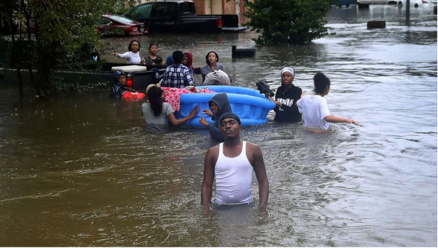

we always wonder how climate change can affect the environment. But how dose climate change affect our communities. How much damnge do our or other citys take from climate change?
some groups of people are vulnerable to the impacts of climate change. people like children, old people, and communities with low wealth. these type of people would have less access to healthcare and fewer resources to be ready to the impacts the climate can cause.
Existing infrastructure may not be able to withstand extreme weather that bring heavy rains, floods, wind, snow, or temperature changes. Existing infrastructres such as bridges, roads, ports, electrical grids, broadband internet, and other parts of our transportation and communication systems. People often design these things to be use for many years. Because of this, most communities have infrastructure that was designed without climate change in mind. 
( Creit to ABC news for this Image )
For example, heavy rainfall that exceeds storm water drainage capacity can lead to flooding that shuts down highways, major transportation routes, and businesses. The picture above shows an example of this.
Coastal infrastructure, such as roads, bridges, water supplies, and much more, is at risk from sea level rise. Nearly 40% of the population in the United States lives in coastal counties. This means that millions of people will be impacted by floods. Researchers project that some communities could end up below sea level by the year 2100. Most likely, communities will either have to adapt their infrastructure (homes) or move away from the shoreline, a process called managed retreat.
sadly this is only the beginning of the destruction of our homes from climate change.